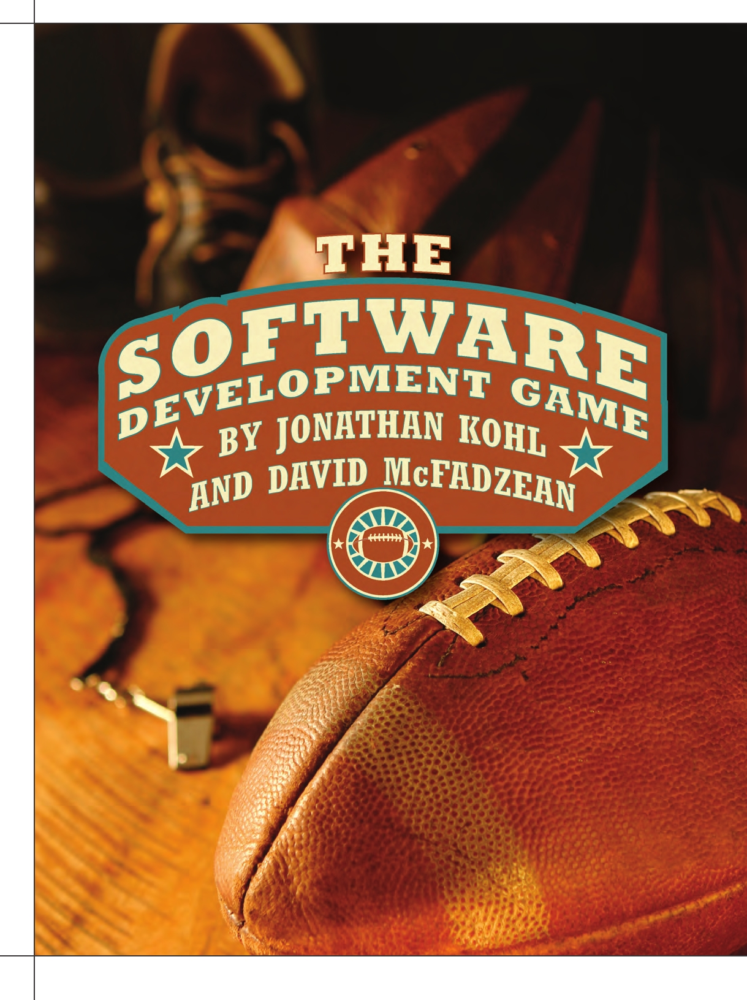
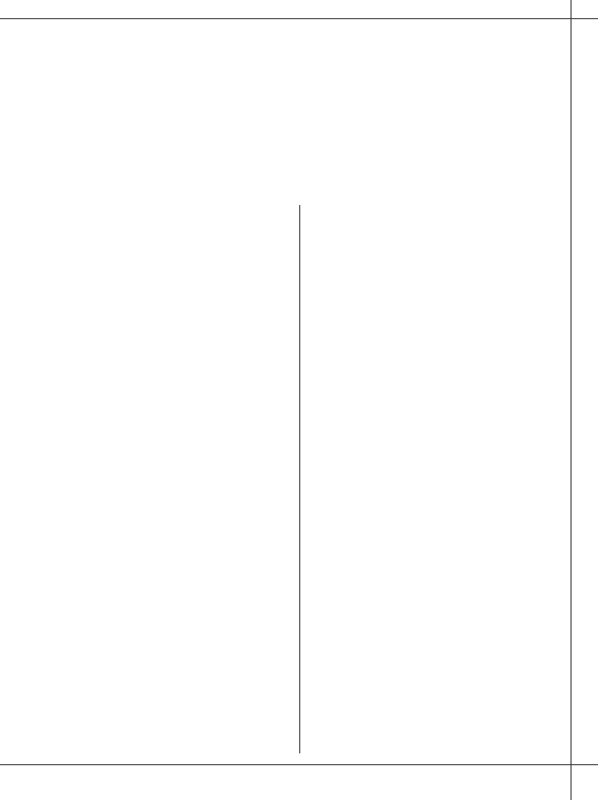
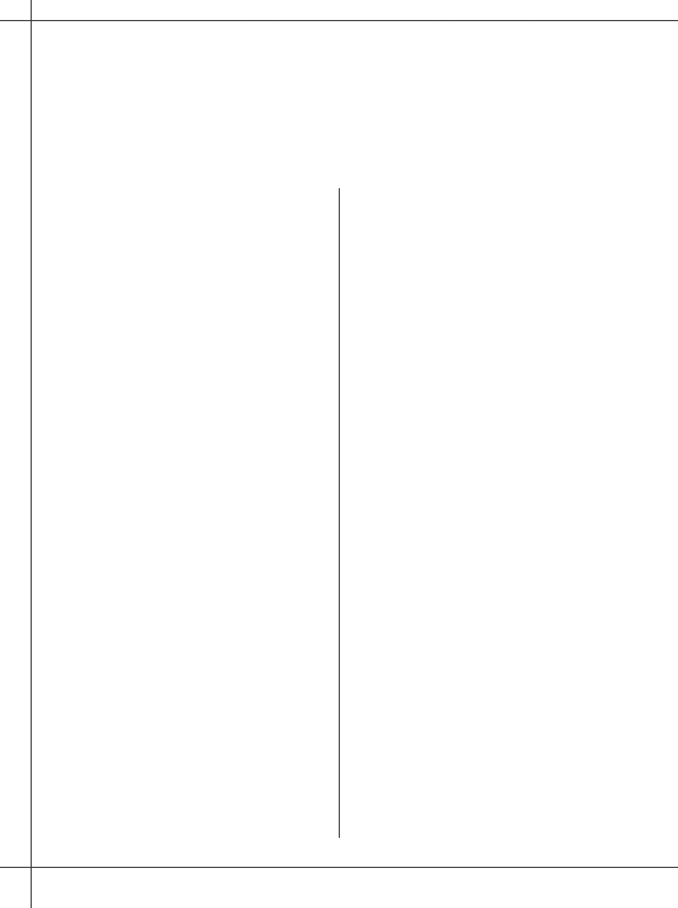
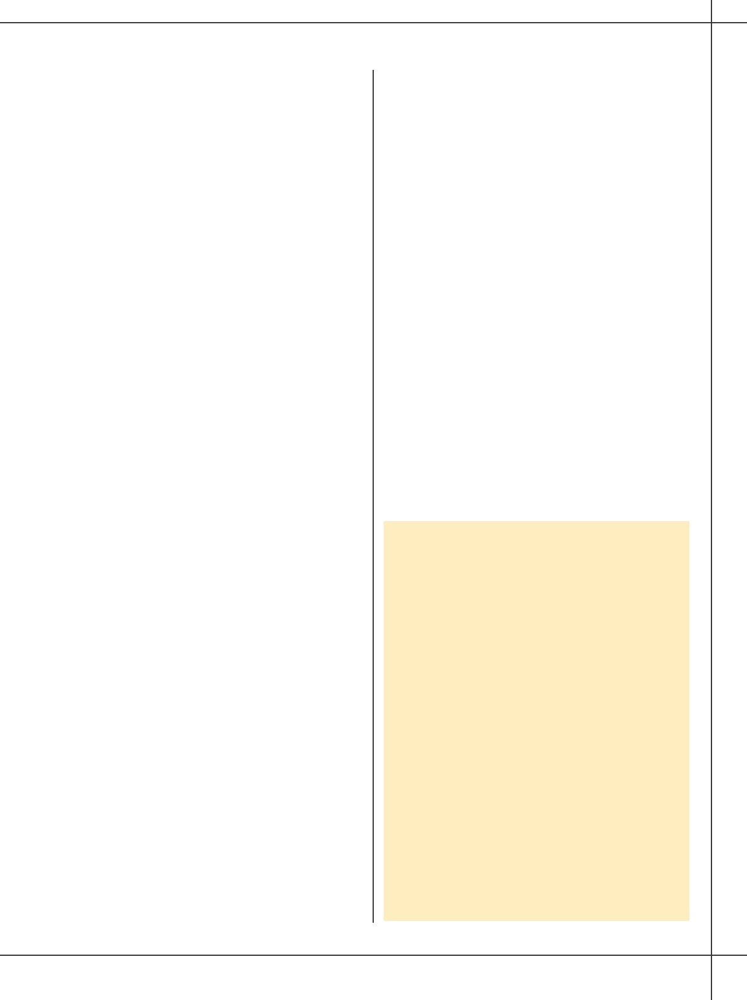
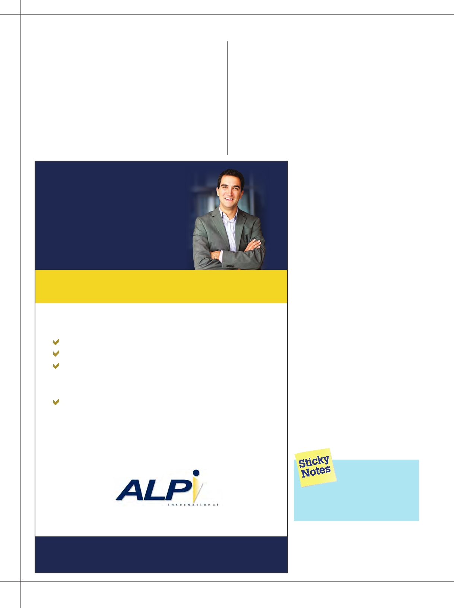

14
BETTER SOFTWARE
SEPTEMBER/OCTOBER 2012

a software development process.
a process strategy called the software development
M anyWe ’vegamete a ms(SD G)deve lopedstrugg leform a nagingtocho o seth e or mixa daptof p rocess, tools, and technology on
software development teams. SDG lets you pick a process—any process—and, using
gaming concepts, helps you adapt it to your own needs.
How can serious software development be treated like a
and unclear to team members. By gamifying decision making,
game? While you may play games for fun in your spare time,
the SDG helps software development teams determine and re-
games are also serious business. Sports have professional
cord their internal practices and their mix of technology, pro-
leagues that support entire industries around their games. The
cess, and tools. It can also serve as a framework to adapt ex-
military uses war games to test strategies and train soldiers.
isting policy and practices or to implement suggested changes
The SDG has been influenced by both game theory [1] (al-
for improvement after a team retrospective.
though we aren’t using any formal mathematical modeling)
While both of us have been influenced by game theory
and a more recent concept called gamification [2].
concepts when leading software development efforts, it was
Game theory is a mathematical discipline used for mod-
David who decided to create a software development game
eling areas as diverse as economics, war, business, artificial
framework based on the game Nomic by Peter Suber [3].
intelligence, and biological evolution. At its core, game theory
Nomic is a game about decision making where players agree
views every situation involving cooperation and conflict as a
on an initial rule set to govern game play, then they raise and
game. Some games have a defined time limit of play and a
vote on proposals to change the rules. So, changing the rules
clear winner and loser, while others are experience based and
of the game is considered a valid move. Nomic is frequently
ongoing—like a quest.
played online, and games adapt over time as the players incor-
Recently, a movement called the gamification of work has
porate new ideas and changes. This is a great fit for dynamic
become popular. Gamification involves imposing a game-like
software development teams that are frequently confronted
structure on certain aspects of professional situations to aid in
with changing environments.
productivity and motivation. Gamification can be as simple as
offering rewards for completing certain tasks, or as complex
Rules of Play
as transforming an entire business practice into a game-like
To implement an SDG instance, a software development
system. Because we can be so productive while performing re-
team starts with a minimal set of rules and an initial goal to
petitive tasks within social or gaming situations, researchers
create a learning organization —a group of people who con-
are trying to figure out how to tap into that potential to mo-
tinually enhance their capabilities to create what they want
tivate within the workplace. (Gamification of work and game
to create [4]. Where the game evolves from there is entirely
theory are not necessarily related, but there is an overlap. Un-
up to the players (team members), but if it goes well, they be-
derstanding game theory can help gamification efforts, and
come more productive and efficient and make better decisions
gamification ideas can enhance game theory implementation.)
as the game progresses. The SDG can start at any level—ex-
On software development teams, the team vision, purpose,
ecutive, management, teams, or individuals. Later, the game
rules of conduct, and informal practices are often created and
can expand to include more players and teams as it proves its
enforced informally. This can result in confusion about the mis-
usefulness.
sion and purpose of the development team within the organiza-
David started as the facilitator. He created the game con-
tion. At best, this informality leads to misunderstandings and
cept and educated team members on the process and the goals
communication breakdown; at worst, it results in a poor align-
of the game. Once David had management buy in and the
ment to leadership’s goals for the organization. Either way,
team agreed to try it out, he explained the initial rule set to
both the team members and the organizations lose out when
govern game play and set up a meeting to see if all team mem-
there is wasted effort that isn’t contributing to value creation.
bers agreed to the rule set. A game page was created on the
While formal game theory involves the use of mathe-
development team wiki describing the initial rule set.
matical models, analyzing gaming behavior is also effective.
We have studied one aspect of game theory that looks at how
E xplanation of rulEs :
people optimize their decision processes. In the SDG, we use
Rule 1: The initial goal of the game is to create a learning
game-like processes to help teams align with goals, provide
organization that enables the players to make high-quality
clarity and coherence on issues, and offer visibility into the
choices and decisions. This rule should likely be refined to
decision-making process. The SDG provides structure and ac-
integrate the mission of the organization playing the game, as
countability on a process that is frequently ad hoc, political,
we specified above.
SEPTEMBER/OCTOBER 2012
BETTER SOFTWARE
15

“ If a proposal is vague, team members will offer up ideas and
alternatives, and proposal clarification is a natural outcome.
A proposal can become more concrete through
discussion and debate. ”
Rule 2: All players must unanimously agree to all rule
For example, if a team member was complaining to col-
changes. The voting rule initially specifies unanimity to pass
leagues about a lack of standards around builds, David would
any proposal. Most games amend this early on to specify
ask that person if the issue was important enough to be solved
some sort of majority vote in order to avoid stalemates, but
by the team. If it was, then he encouraged the team member
the initial rule errs on the side of caution so that the founda-
to bring a proposal to the team so they could vote on it. A
tions can be laid out carefully.
proposal could be as simple as: “Broken builds are a serious
Rule 3: Proposals may add, amend, or repeal a rule. This
productivity issue. Some of us are spending hours trying to
describes the initial set of “moves” that can be made in the
fix the build instead of completing tasks. We need to agree
game—introducing a new rule, changing an existing rule, or
to fix the build problem and come up with ideas to address
removing an existing rule. The game will usually evolve more
the problem.” While that might seem like a simple proposi-
sophisticated rules, such as giving certain classes of players the
tion to pass because it’s easy to agree to solve a problem, the
right to veto vote under some conditions; creating a category
hard part is actually doing something about it. If a proposal is
of immutable rules that cannot be amended (unless they are
vague, team members will offer up ideas and alternatives, and
removed from that category); and introducing new types of
proposal clarification is a natural outcome. A proposal can
acts such as resolutions, goals, standards, and guidelines.
become more concrete through discussion and debate. Ideally,
Rule 4: All rules should be logically self-consistent. En-
the team will generate proposals with ownership and respon-
suring that rules are logically self-consistent helps encourage
sibility assigned to team members. From our prior example, a
fair play and motivates the players to keep the rule set sane.
more specific proposal that would be actionable is: “Broken
Whenever an inconsistency is introduced (accidentally or by
builds must be fixed before any new code is committed to the
design), the players will be motivated to resolve the inconsis-
version control system.”
tency by amendment or repeal.
Thinking up solutions for problems can take time and can
cause a face-to-face meeting to drag out. Furthermore, some
David then guided the team through initial game play.
personality types think better outside of a group and may ap-
After agreeing on the initial rule set, the team set to work on
proach team members after a face-to-face meeting.
solving a difficult issue: determining C++ coding standards for
The team agreed to use technology to make the process
the team. Choosing coding standards can be one of the most
more efficient—proposals and votes on them could be initi-
contentious issues any development team can face. (Those of
ated and executed electronically. If a proposal required more
you who code for a living understand how difficult this can
information than could be conveyed in email or was of a
be; those of you who don’t, imagine trying to find compro-
serious nature, the facilitator could initiate a face-to-face
mise between opposing political parties or religions.)
meeting to hear the proposal and hold a vote.
A proposal for a coding standard was put forward and
Now, imagine that you are the DevOps team member who
voted in with a majority. After the vote and resolution,
has come up with a proposal to fix the build problem. You’re
meeting details and the coding standard resolution were re-
the team member who feels the broken build pain the most,
corded on the development team wiki. By bringing the coding
and your potential solution works well. You’ve tested it out
standards into the game, they now became rules of the game
and your findings are positive. You explain your proposal to
itself. By bringing software development policy and practices
adopt a solution within the SDG, but you fail to get a ma-
into the game, the team created a mechanism to follow and
jority vote. You are disappointed, and no other alternatives
govern changes.
received a majority vote. You know this is the right way to go,
so what do you do? If you want the vote, you will need to do
Evolving the Game
what people in politics do and lobby for support.
The SDG requires a framework for communication,
Ê EducateÊteamÊmembersÊonÊtheÊmeritsÊofÊyourÊproposal.
raising issues, creating proposals to vote on, holding votes,
Ê TryÊtoÊgetÊkey,ÊinfluentialÊpeopleÊonÊyourÊsideÊtoÊvoteÊ
and tallying results. David used a combination of a wiki, face-
for the proposal.
to-face meetings, email, and in-office instant messaging. In his
Ê AppealÊtoÊtheÊskeptics:Ê How about a proposal to iden-
role as facilitator, he answered questions, explained concepts,
tify measurable outcomes and do periodic checks on
and watched for potential team issues that could be brought
the system to see if it is solving problems or not?
under the SDG.
Ê MakeÊaÊformalÊproposalÊandÊvote.Ê
16
BETTER SOFTWARE
SEPTEMBER/OCTOBER 2012

Ê HopeÊyourÊlobbyingÊeffortsÊpayÊoffÊandÊtheÊproposalÊ
Why ItWorks
passes.
This isn’t a one-team, one-time success story. David has
implemented several SDG instances on different teams at dif-
Once team members are comfortable with the process, it
ferent companies over the past few years. We have found that
doesn’t take long for them to realize that any proposal can be
making the problem-solving and decision-making processes
brought forward—even the most self-serving ones. If there is
visible helps improve communication and reduces confusion.
team consensus to implement a change, the motivation behind
Much misunderstanding on development teams stems from
it doesn’t matter. It might be as simple as one team member
differing expectations about what the team or individuals
becoming bored with the current technology and wanting to
should accomplish and a lack of alignment toward organi-
move to something new. It might seem selfish to say, “I don’t
zational goals. Since decisions are democratic—anyone can
want to work on Java web apps that much anymore. I’d love
table an issue, the team votes on all changes, and decisions
to work on mobile projects.” But if it is brought up in a forum,
are binding—team members feel included and valued as inte-
you’d be surprised how many others on the team feel the same
gral parts of the process. The SDG provides a framework for
way, including managers and product managers. Management
raising concerns and changing existing practices and tools in
may feel the organization needs to move to new technology
a way that helps teams cope with the changes in their external
to not fall behind, and product managers may be researching
environment by adapting their internal practices as needed.
what competitors are doing, but neither group wants to
Furthermore, if the team finds that the game framework itself
bother the busy development team about it right now.
isn’t working for them anymore, they change the rules to im-
Without a forum to raise an issue openly and honestly, this
prove it. Using game-like concepts in the workplace is a way
kind of idea goes underground. In the worst case, it festers as
to harness the natural behavioral dynamics that occur within
a frustrated team member complains to others or attempts to
groups. Since the game itself can be adapted, teams don’t find
use subversive or manipulative methods to try out a new tech-
themselves stuck with a rigid process that isn’t appropriate
nology platform. Once the right stakeholders are informed
for their new circumstances. Rules can be amended or even
and they buy in to a proposal, it can be a powerful technique
repealed if they no longer add value.
to introduce change, even with self-serving motivations.
Management and other leaders might be nervous about
Once David’s team had proposed and voted on a number
the SDG at first. It should be clear for both management and
of resolutions, the rule set expanded. This required catego-
team members that the game only applies to areas over which
rization. Two potential categories are rules that govern the
the development team has ownership. The team shouldn’t
game itself , and rules that govern software development ac-
tivities . In addition to the initial SDG rules, rules were added
to govern rule changes, proposals (create or withdraw pro-
posals), voting rules (what constitutes majority), and multi-
I mplementIng Y our o wn S oftware
votes (tie breakers, etc.). For the software development ac-
D evelopment g ame
tivities, rules were grouped according to team policies (vision
1. Start off with simple game play rules (feel free to
statement, processes to follow) and development standards
use our example).
(coding standards, code reviews, and build and testing activi-
2. Use a facilitator to guide game play, manage
ties). As the rule set expanded, roles were added so that team
meetings, tally scores, and record and update
players could have ownership in certain areas of the game
rules.
based on their expertise and interest level. For example, roles
3. Start simple, and let the game evolve. Don’t try to
can involve facilitating game play itself, overseeing technical
do too much.
components of the software development system, and guiding
Develop team policy and alignment to
product direction. Roles were expanded to include managers
and other stakeholders when their participation was needed.
organizational goals.
The SDG evolved further to include gamification aspects
Consider using the game to help implement
for repeated tasks. Achievements for repeated tasks that
retrospective ideas.
might not be that pleasant were added as quests in the game.
4. Use the game to discover what your existing
For example, business travel can be difficult and tiring, so
processes are, record and ratify them, and make
the team decided to reward the top travelers on the team by
them visible to all team members.
giving them a shout out on the team wiki. There also were
5. Don’t let the rules become unwieldy:
humorous booby prizes awarded to the last person who set
Try to keep rules brief and lightweight.
off the building alarm or to the person who broke the build
If rules are too numerous, work on scaling
the most frequently.
them back.
This particular SDG instance has evolved to incorporate
6. As the game expands, introduce additional roles to
more and more of the daily life of the development team,
help with administration.
while providing structure around communicating issues and
making decisions on how to move forward.
SEPTEMBER/OCTOBER 2012
BETTER SOFTWARE
17

contradict existing corporate policies or try to overturn deci-
management can review when and why certain technical di-
sions made by leadership. For example, team members can’t
rections were taken when proposals were voted in.
just go and vote themselves raises and bonuses or decide on
An SDG helps teams make decisions, particularly if the
their own to scrap the existing product line. For areas that are
teams are self-organizing. It also helps build team cohesion
governed by other stakeholders, the team can bring issues to
and encourages diversity of opinion and healthy dissent. If
their attention, but the existing organizational structure and
there are serious problems, an SDG can provide a framework
policies should remain intact. (If leaders want to add the game
to help a team change course on projects and tasks to reach
to other areas, that is fine, but don’t try to use the game to
organizational goals.
undermine them.) Leaders will find that the game can create
A fabulous place to start using an SDG is to help imple-
clarity and coherence of their vision of the company and
ment changes after a retrospective. How many times do we
their product and service mix. Team alignment on actions and
have a great meeting after a release, outlining problems we
goals may increase, and the transparency on decisions means
encountered and possible solutions, only to forget about
them until the next retrospective? In the
meantime, we didn’t do anything; we
were too busy working on tasks. We had
great intentions, but without a system to
help us decide on courses of action and
to measure progress, we forgot about
our solution ideas. With an SDG, ret-
rospective ideas can be implemented
through the game, rather than forgotten
until next time.
Conclusion
Software development processes can
be difficult concepts to apply broadly.
What worked for one team in its unique
context may not work for your team.
Adaptation is important in cases when
a team tries out a process and finds that
some practices don’t work or that key
components are completely absent. When
processes fail, a convenient response is
“You need to do what works for you and
your team.” That makes sense, but what
specific, concrete practices do you use
to find out what process works for you?
We’ve had good success figuring that out
for our teams by using the software de-
velopment game. {end}
Bulk Training Program
jonathan@kohl.ca
Refresher courses at no additional cost
Savings of up to 40% on
davidmc@gmail.com
Consulting services to help you quickly
training courses
implement the test tools and processes
Credits good for one year
For more on the following
topics go to
www.StickyMinds.com/
bettersoftware.
n�
References
Since 1993, ALPI has empowered clients with innovative solutions delivered by our staff
n�
Further reading
of flexible and creative professionals. Trainings are held at our state-of-the-art facility,
located just outside of the Nation’s Capital, or onsite at your company location.
Contact training@alpi.com or 301.654.9200 ext. 403
for additional information and registration details
www.alpi.com
18
BETTER SOFTWARE
SEPTEMBER/OCTOBER 2012